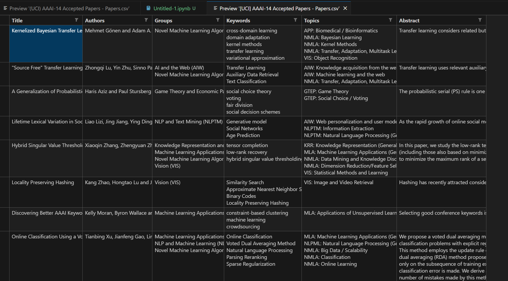
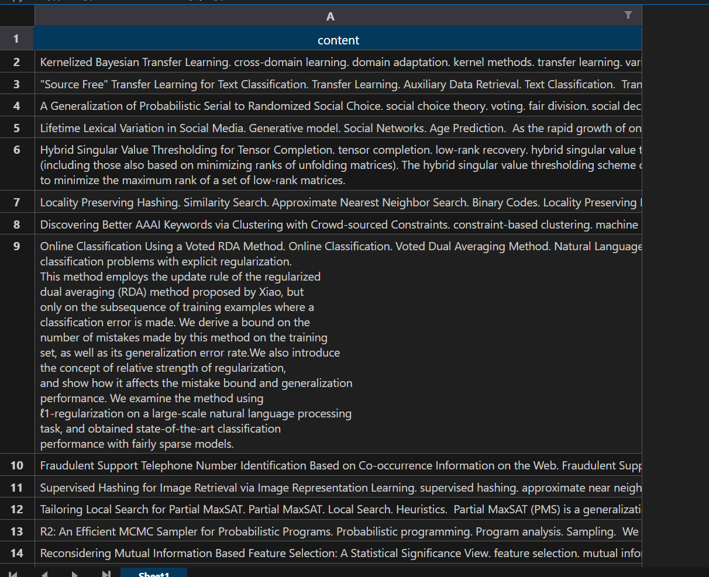
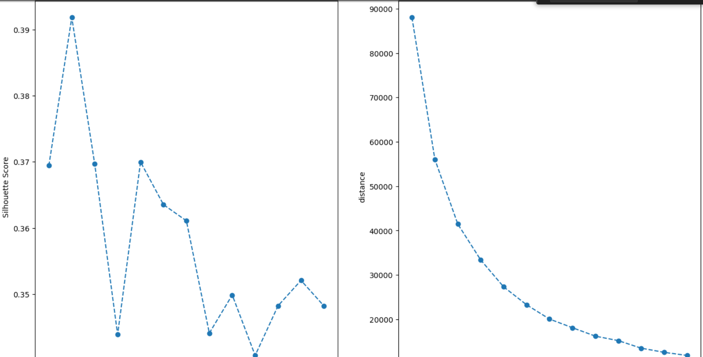
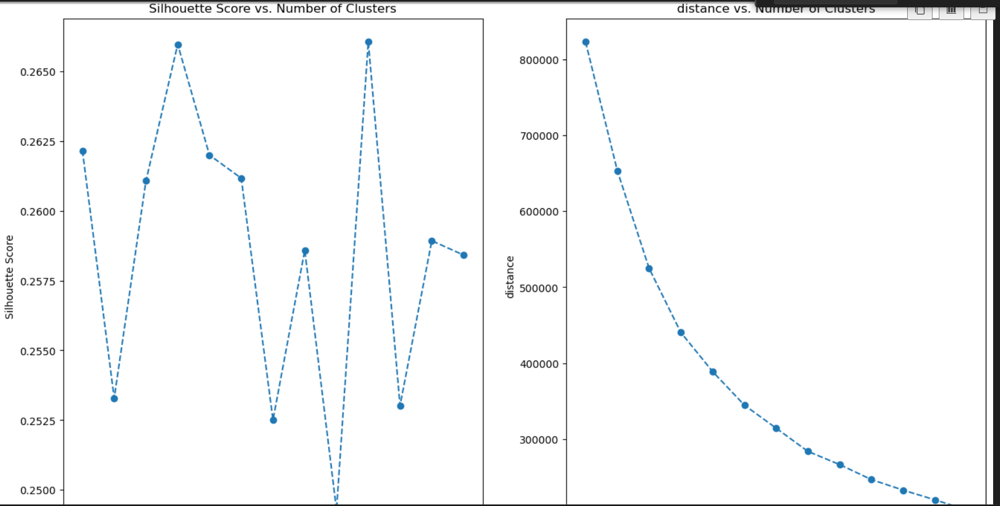
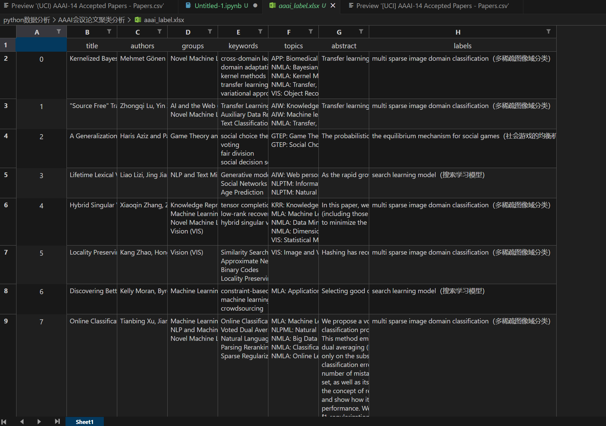

AAAI会议论文聚类分析
1 简介
这次需要面对的会议数据和之前“sklearn基于降维聚类可视化”那一篇的原理几乎一样，但是数据格式略有不同。
除了原本就有的内容，还加了一些自己的理解和代码补充，比如，最初是选择数据列的不同，并添加了“t-sne降维”、“给聚类结果一个家”等。旨在补充原内容，更好地分析数据。
这篇博客的完整代码，在我的仓库中，地址：https://github.com/Guoxn1/ai。
首先看下这次的数据：

这个数据集是2014年某会议的投稿论文简介，其中包括title、topic、abstract等。现在的任务，就是根据这些描述，重新对这些文章进行聚类。可能会问，每个文章都已经有group了，为什么还要我们对其聚类。原因在于这些文章在投到类别时，可以投了多个，也可能有更好的类别适合原本投的那一类。我们现在要做的，就是根据描述信息，重新为其聚类。
考虑使用哪些数据来进行分析呢，对文章分类，与作者无关，要对文章重新分类，所以也不能把group加进来。author和group，title我们不作为分类的主要依据，这好理解。所以我们把剩下的：keywords、topics、abstract这三项作为分类的数据。可以考虑将其拼接在一块进行处理。
这里的数据有些不同，是文本数据，而聚类算法通常是要处理向量的，所以考虑先把其转换为向量。经常利用到的方法可能是tdidf算法，（后面做简要介绍）变成向量，即数字后，可以对其进行kmeans聚类或者高斯聚类等聚类方法，也可以考虑使用pca或t-sne进行降维后，再进行聚类。期间，使用聚类时，参数的指定，可以使用肘部法则或者使用本文提到的方法进行参数的最优化选择，以期得到较好的聚类结果。最后，可以对结果进行可视化展示。
2 文本转向量
2.1 tdidf算法简介
TF-IDF（Term Frequency-Inverse Document Frequency）是一种常用于文本挖掘和信息检索的技术，用于评估一个词语在一篇文档中的重要程度。
具体来说，调用它的tdidf接口，把文本转换成向量，主要做了下面几件事：
- 文本预处理：在使用
TfidfVectorizer之前，需要对文本数据进行预处理，例如分词、去除停用词、转换为小写等操作。这些预处理步骤有助于提取准确的词语，并减少无关信息的干扰。 - 词频（Term Frequency，TF）：TF 表示一个词语在文档中的频率，计算方式为词语在文档中出现的次数除以文档中的总词语数。TF 表示了一个词语在当前文档中的重要程度。
- 逆文档频率（Inverse Document Frequency，IDF）：IDF 表示一个词语在整个语料库中的常见程度，计算方式为语料库中的文档总数除以包含该词语的文档数的对数取倒数。IDF 表示了一个词语在整个语料库中的重要程度。
- TF-IDF 特征向量：TF-IDF 特征向量是将文本数据转换为数值表示的过程。通过将每个词语的 TF 值与 IDF 值相乘，可以得到每个词语在文档中的 TF-IDF 值。最终，将每个文档表示为一个向量，其中每个维度对应一个词语的 TF-IDF 值。
TF = (词语在文档中出现的次数) / (文档中的总词语数)
例如，如果一个词语在文档中出现了5次，而文档中的总词语数为100，则其词频为 5/100 = 0.05。
IDF = log((语料库中的文档总数) / (包含该词语的文档数))
这里的 log 表示以10为底或以自然对数为底的对数，选择哪种对数取决于具体的需求。
例如，如果语料库中的文档总数为1000，而包含某个词语的文档数为100，则其逆文档频率为 log(1000/100) = log(10) = 1。
这里面文档数就是文章数，就是咱一共分析的文章数目。由于计算每个词的tf*idf，因此可以每个文档可以写成一个向量形式。
2.2 拼接文本数据
拼接四列的数据，注意对每一列做一个处理，比如keywords列，为每一行加.，这样可以在分词的时候不会被后面的词连在一块影响。
1 | |

2.3 转换为向量
1 | |
这个直接调用接口，指定最大向量为1000维，提取频率最大的1000个词。
到此，已经将文本转换为向量。
3 pca降维聚类
3.1 pca降维
这里就不在对原数据进行聚类了，而是先降维后再进行聚类，因为维数确实很大，1000维，必然效果一般，考虑先用pca进行降维后再进行处理。
降低成三维可行吗，可视化是可行，但是数据分析估计不太行，计算多少维的数据能代表80%的数据，至少
1 | |
输出 187
至少187维。
那么我们想要表示95%的数据，应当有多少维：
1 | |
需要301维。
那好，pca确定降维就到301维。
3.2 评价标准确定参数
进行Kmeans聚类，选择合适的聚类数目是必要的。上次用到了肘部法则。这里再介绍一个轮廓分数，silhouette score。它衡量了聚类结果中簇内的紧密度和簇间的分离度。
通过计算轮廓系数，可以评估聚类算法在给定数据上的聚类质量。具体而言，较高的轮廓系数表示聚类结果的簇内紧密度较高、簇间分离度较好，聚类效果较好。
用轮廓系数和肘部法则同时进行评判kmeans在不同聚类数目下的聚类效果，以确定最佳聚类数目。
1 | |

这个数据的肘部法则显然不太明显，而且对于轮廓系数，理论上是越高越好，但是簇数目也不宜偏多。效果差了点，但也没什么问题。
这里可以选择以4或者6作为聚类数，为了防止过拟合，我们以4作为聚类数目，当然以6也可以。
kmeans弄完了，我们再来看一下高斯聚类，同样的道理，但是指标有所不同。这里要看高斯聚类的轮廓系数和BIC和AIC的值。
较低的 BIC 或 AIC 值表示较好的模型拟合。
1 | |

结果显示聚类在5类左右效果综合来看比较好。
3.3 进行聚类并可视化
1 | |

1 | |

直观上看还是kmeans的分类效果好一点。
4 t-sne降维聚类
4.1 tsne降维
t-sne没有一个很好的评价指标，他不像pca一样可以限定解释95%的主成分，直接这样指定在参数内，可以获得降维后的维数。并且t-sne的降维后的维度不能多于3维。所以直接指定降维成二或三维，并聚类。
由于维数数目比较大（1000），很可能不是线性问题，所以采用了t-sne降维。
4.2 评价指标确定参数
这里的代码和仓库中的代码顺序略有不同，仓库的代码是先分析三维再二维。
先在二维条件下：
1 | |

二维条件下，kmeans适合聚类为3个。
1 | |

二维条件下，高斯聚类也更偏向于3类。
1 | |

这个效果还不错，当n等于5时效果不错。
在三维条件下，考虑使用kmeans聚类成5类。
1 | |

在三维条件下，高斯聚类在n=5时也不错。
4.3 进行聚类并可视化
二维：
1 | |

效果都还蛮不错的。
三维的：
1 | |

三维的看起来略微有点吃力了，但总体来看还是比较集中，结果也很不错的。
5 给聚类结果一个家
为什么这么说呢，因为聚类只是聚成了一个类，但是没有给一个明确的标签。这就要我们来规定某一类它应该是什么，说白了就是找这一类的共性。我们为了分析，把文本转换为数字向量，为了给每一类赋予实际的意义，我们还需要找到他们这一类的共同点。
还是采用tdidf算法，找到相同类别的所有文档中最高的10个tdidf的词，最后手工给一个好的标签。
这里呢，我们以分类较好的pca0.95-kmeans-4类和tsne2-kmeans-3类为例。
5.1 集合类文档
pca0.95的kmeans算法一共分为了4类，总共需要有4个documents（对应4类），每个documents中存储各个原始content。
1 | |
tsne2的kmeans算法一共分为了3类，总共需要3个ducuments（对应3类），每个documents存储各个原始的content。
5.2 给出每类的家（标签）
先定义好寻出10个最具代表性的词的函数：
每个documents（类别）都要被调用到该函数中，得到最具代表的5个词。
1 | |
运行算法，得到top10标签
1 | |
输出如下：
1 | |
接下来，我们人工给这出现最高的10个词，选几个合适的，给类别打上标签。
前四个是pca0.95-kmeans的，第一类可以打标签是：search learning model（搜索学习模型），第二类：the equilibrium mechanism for social games（社会游戏的均衡机制） ,第三类：Based on control logic and checking learning（基于控制逻辑和检查学习），第四类：multi sparse image domain classification（多稀疏图像域分类）
后三个是tsne2-kmeans的，第一类：multi sparse image domain classification（多稀疏图像域分类），第二类：constraints planning， search learning（约束规划、搜索学习），第三类：the equilibrium mechanism for social games（社会游戏的均衡机制）。
这些后面的打标签，靠人的知识来进行组合，大体来看，相似度还挺高的，效果也不错，为每一个类找到一个家。
5.3 每个title后面加一列属于自己的标签列
接下来还可以考虑将这些标签重新返回到最初始的文件中，给每个title后面加一列属于自己的标签列。
我这里仅以pca0.95的四分类为例。
1 | |

这样每一个文章，它的聚类结果，就对应上了。
如果这篇博客给到您帮助，我希望您能给我的仓库点一个star，这将是我继续创作下去的动力。
我的仓库地址，https://github.com/Guoxn1?tab=repositories。